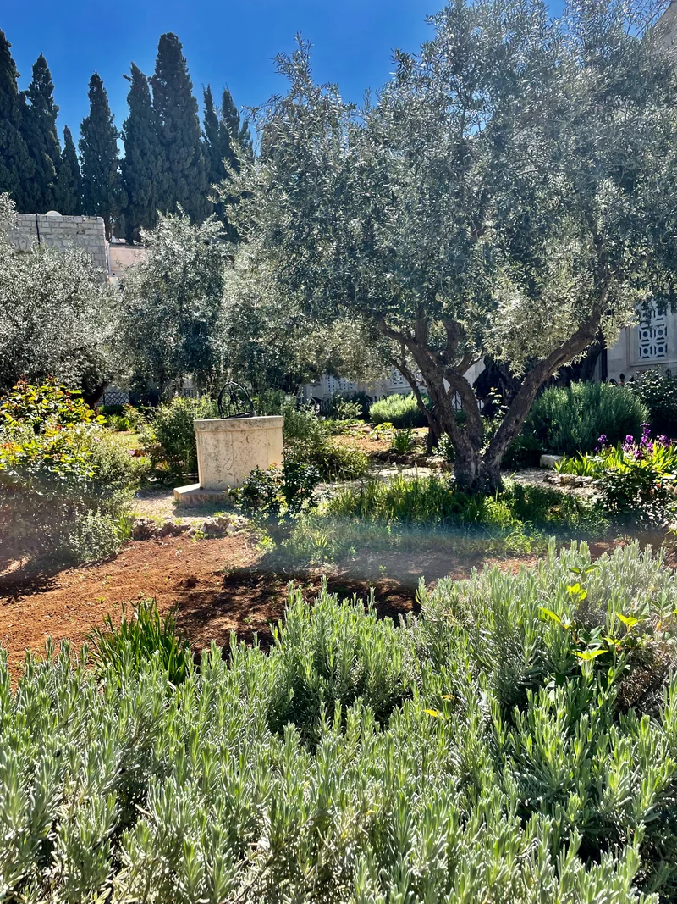
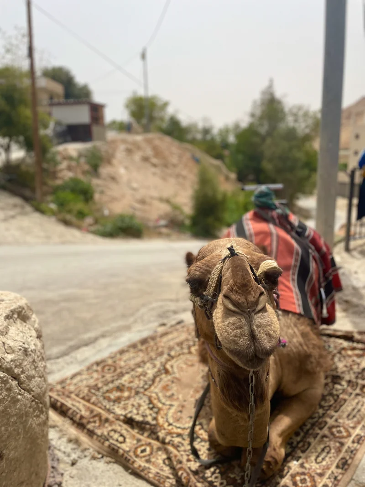
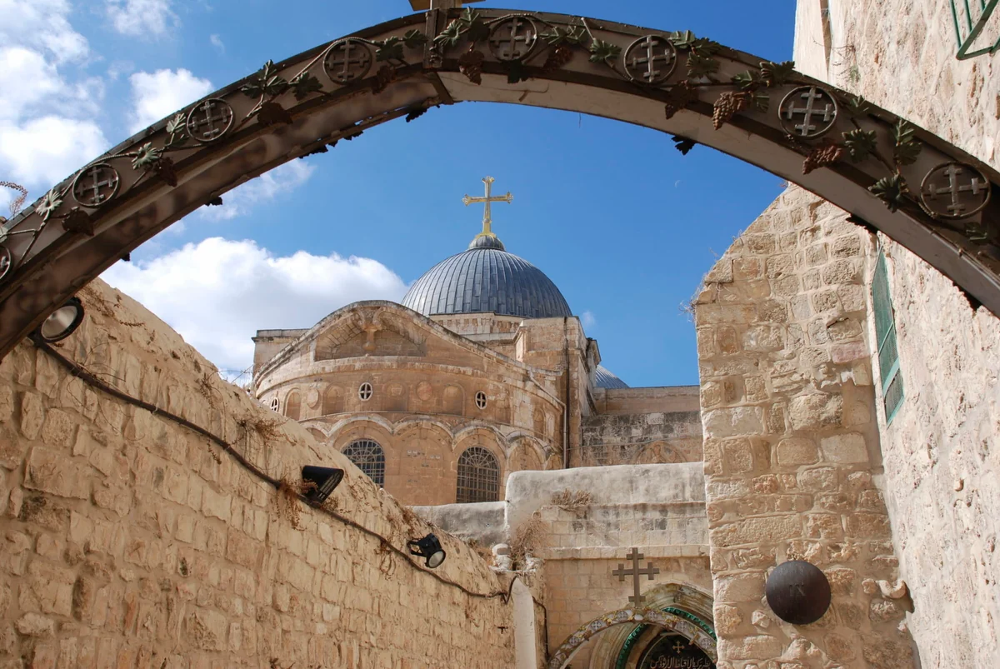
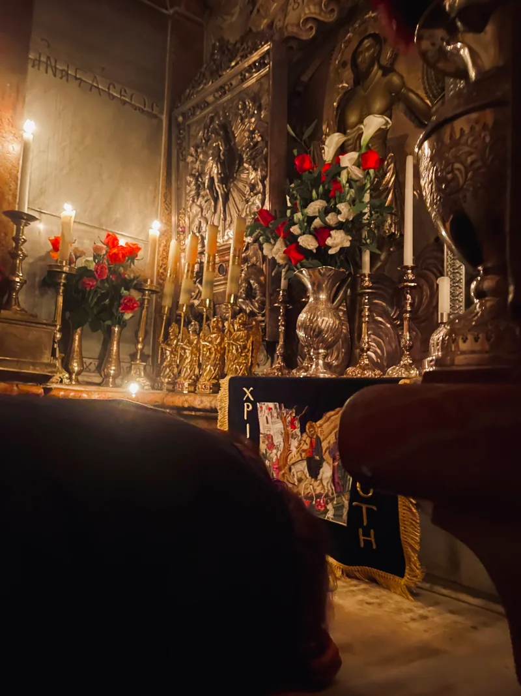

La Semana Santa 2027 va del Domingo de Ramos, 21 de marzo, al Domingo de Pascua, 28 de marzo. Vivirla en Jerusalén es acompañar a Jesús en los mismos lugares de su Pasión, Muerte y Resurrección: el Monte de los Olivos, el Cenáculo, Getsemaní, la Vía Dolorosa, el Calvario y el Sepulcro vacío.
Nuestra peregrinación a Tierra Santa y Medjugorje 2027 sale el 19 de marzo, recorre Tierra Santa durante toda la Semana Santa y el 29 de marzo continúa a Medjugorje para la Octava de Pascua. Aquí te explicamos cómo celebra la Iglesia cada día en Jerusalén y qué viviremos en el viaje.
Peregrinación de Semana Santa 2027: datos principales
- Fechas:
- del 19 de marzo al 6 de abril de 2027 (18 días / 17 noches).
- Tierra Santa:
- hasta el 29 de marzo, con toda la Semana Santa.
- Medjugorje:
- del 29 de marzo al 6 de abril, con la Octava de Pascua y el Domingo de la Divina Misericordia.
- Lugares:
- Belén, Nazaret, Galilea, Jerusalén, Mar Muerto y Medjugorje.
- Acompañamiento:
- sacerdote, Misa diaria y guía profesional.
- Salidas:
- desde cualquier ciudad de Estados Unidos, desde Bogotá o desde cualquier parte del mundo. Te ayudamos a coordinar vuelos y conexiones.
- Precio:
- desde €4.760 por persona, con vuelos, alojamiento, todas las comidas, transporte, entradas, guía y sacerdote.
¿Cuándo es Semana Santa 2027? Fechas
- Domingo de Ramos: 21 de marzo
- Jueves Santo: 25 de marzo
- Viernes Santo: 26 de marzo
- Sábado Santo y Vigilia Pascual: 27 de marzo
- Domingo de Pascua: 28 de marzo
- Domingo de la Divina Misericordia: 4 de abril
Son las fechas del calendario católico. Las Iglesias ortodoxas celebran la Pascua de 2027 el 2 de mayo, de modo que la ceremonia ortodoxa del Fuego Santo en el Santo Sepulcro será el 1 de mayo, fuera de las fechas de nuestro viaje.
Cómo se vive la Semana Santa en Jerusalén, día por día
En Jerusalén, los franciscanos de la Custodia de Tierra Santa, que cuidan los santos lugares en nombre de la Iglesia católica, celebran la liturgia en los mismos sitios del Evangelio. Este es el esquema tradicional; los horarios exactos se publican cada año.
Domingo de Ramos: de Betfagé a Jerusalén
Por la mañana se celebra la Misa con la procesión de ramos en la Basílica del Santo Sepulcro. Por la tarde, la gran procesión sale de Betfagé, cruza el Monte de los Olivos entre palmas y cantos, y baja hasta la iglesia de Santa Ana, junto a la Puerta de los Leones, recordando la entrada de Jesús en Jerusalén.

Jueves Santo: el Cenáculo y Getsemaní
Por la mañana, en el Santo Sepulcro, se celebra la Misa de la Cena del Señor con el lavatorio de los pies. Por la tarde, los peregrinos acuden al Cenáculo, el lugar de la Última Cena. Por la noche, la Hora Santa en la Basílica de la Agonía, en Getsemaní, acompaña a Jesús en su oración antes de la Pasión.

Viernes Santo: la Vía Dolorosa
Por la mañana se celebra la Pasión del Señor en el Calvario, dentro de la Basílica del Santo Sepulcro. Hacia el mediodía, el Vía Crucis recorre la Vía Dolorosa por las calles de la Ciudad Vieja. Por la noche, la procesión «fúnebre» dentro de la basílica recuerda la sepultura de Jesús.

Sábado Santo: la Vigilia Pascual por la mañana
Una particularidad de Jerusalén: la Vigilia Pascual se celebra en la mañana del sábado, en el Santo Sepulcro. Se debe al Status Quo, el acuerdo que desde el siglo XIX regula los horarios de las comunidades cristianas que comparten la basílica.
Domingo de Pascua: ante el Sepulcro vacío
La Misa de Pascua se celebra en el Santo Sepulcro, ante el Edículo que guarda la tumba de Jesús, el lugar donde la Iglesia anuncia su Resurrección.

El programa de cada año lo publica la Custodia de Tierra Santa, y las celebraciones públicas pueden ajustarse según las circunstancias. Antes del viaje compartimos con el grupo el programa confirmado.
Qué más viviremos en Tierra Santa
Además de Jerusalén, la peregrinación recorre los lugares de la vida de Jesús:
- Belén: la Basílica de la Natividad.
- Nazaret: la Basílica de la Anunciación.
- Galilea: el Mar de Galilea, Cafarnaúm, Magdala y Tiberíades.
- Caná: renovación de las promesas matrimoniales para las parejas casadas.
- Río Jordán: renovación de las promesas bautismales.
- Y también: Ein Karem, Betania, Jericó, Samaria, el Monte Carmelo en Haifa y el Mar Muerto.
El orden de los días está en el itinerario detallado. Escríbenos y te lo enviamos.
La Octava de Pascua en Medjugorje
El 29 de marzo el grupo viaja a Medjugorje, en Bosnia y Herzegovina, donde permanece hasta el 6 de abril. Allí viviremos la Octava de Pascua con la Misa en la iglesia de Santiago Apóstol, el programa de oración de la tarde, la subida a la Colina de las Apariciones (Podbrdo) y el Vía Crucis del Monte Krizevac. El Domingo de la Divina Misericordia, 4 de abril, lo celebraremos en Medjugorje. Te contamos más en qué se vive en Medjugorje.
Consejos para vivir la Semana Santa en Jerusalén
- Paciencia con las multitudes: la Ciudad Vieja se llena de peregrinos, y en el Santo Sepulcro hay filas largas para entrar al Edículo.
- Calzado cómodo: se camina mucho por calles de piedra, con cuestas y escaleras, como en el Monte de los Olivos y la Vía Dolorosa.
- Ropa modesta: hombros y rodillas cubiertos para entrar en los templos.
- Clima de primavera: a finales de marzo suele haber días templados y noches frescas; lleva una chaqueta.
- Preparación espiritual: lee los relatos de la Pasión en los Evangelios (Mt 26–28, Mc 14–16, Lc 22–24 y Jn 13–20).
¿Quieres comparar opciones? Revisa precios y fechas de las peregrinaciones 2027 a Tierra Santa y Medjugorje.
Vive la Semana Santa 2027 en Tierra Santa y la Octava de Pascua en Medjugorje. Del 19 de marzo al 6 de abril peregrinaremos con sacerdote y Misa diaria, y puedes unirte desde cualquier ciudad de Estados Unidos, desde Bogotá o desde cualquier parte del mundo. Escríbenos por WhatsApp y te enviamos el itinerario.
💬 Escribirnos por WhatsApp Ver peregrinación de Semana Santa 2027Fuente: Custodia de Tierra Santa: programa de Semana Santa en Jerusalén (2026).